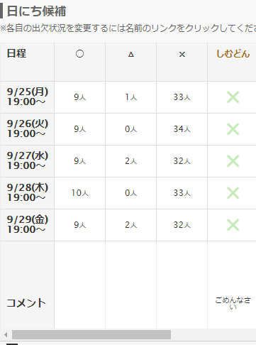

本田オフの思い出
この記事は しむどん Advent Calendar 2017 12日目の記事として投稿しています。
こんにちわ。jpではナナチの人でんなぁーしてるぐすくまです。
しむどんがアドベントカレンダーをするということなので、便乗して一つ書かせていただきます。
本田オフについて
しむどんで真っ先に思い浮かんだのは本田オフですね！
※本田オフとは何か
しむどんが、9/25～9/29の期間を通して開催すると宣言したオフ会の名称です。
正直本田オフがなぜ本田オフと名づけられたのか、正直良く分かってません！ 本田翼がどうのという話だったような気はするけど。
きっと今日の記事を読んでくれた しむどんが、空リプでその理由を書いてくれると思うので、後ほどこの記事も更新させてもらいます！
(12/12 23:55更新)
よくわからないけどなんかいい感じの回答をもらいました！なるほど。よくわからないけどよくわかった！
あと、感謝ありがとうございます。僕も感謝感謝です。
本田オフの日程等は調整さんからまだ確認できます。
本田オフ - 閉会しました。参加者の方お疲れ様でした。 | 調整さん
リンク先が消えたら嫌なので、詳細を下記に転載しておきます。
ドレスコード：グラサン
場所：鳥取砂丘 (落書きは絶対にしないでください)

しょっぱなから主催者が全欠席という大波乱の下で執り行われた本田オフでした。
せっかくなので、今回のこの記事では当時の出来事を振り返りつつ、本田オフのことについていろいろと振り返ってみようと思います。
1日目、鳥取砂丘にて
きっとBBQとかリア充みたいにみんな集まってワイワイガヤガヤしてたんでしょうね！うらやましい！
ちなみにその時の僕はと言うと、職場のPCが固まって動かなくなっていて、荒ぶっていました。
2日目、鳥取砂丘にて
きっとみんなでポケモンGOとかやったりして、ワイワイガヤガヤしてたんでしょうね！うらやましい！
鳥取砂丘のポケモンGOと言えば、つい先日イベントが行われましたが、本田オフが時代を先取りしてしまう形になってしまいましたね！
さすが本田オフ！
鳥取砂丘で「ポケモンGO」、3日間で8万7000人来場 経済効果は十数億円 - 産経ニュース
その頃の僕は、京急の三崎口駅が三崎マグロ駅に改称するというニュースを見てがっかりしていました。
ただ、この記事を書くにあたってちゃんと調べてみると、12/3までの期間限定で看板のデザインを差し替えただけだということが分かりました。
京急が三崎口を｢三崎マグロ駅｣にした理由 ｢まぐろきっぷ｣値上げしても大人気は続くか- 記事詳細｜Infoseekニュース
良かった。犠牲になった三崎口駅は無かったんだね。
3日目、鳥取砂丘にて
きっとみんなで近くの海岸まで行って釣りしたり、釣った魚を砂丘にもってきて捌いて食べたんだろうなぁー！うらやましい！
そもそもわざわざ砂丘で捌かなくても、近くの食堂に持ってったらやってくれたりしそうだけど。まぁそれはオフ会ならではの楽しみってことで。
その頃の僕は、当日分のTooterminal更新が終わって満足のんなぁーをしていました。
4日目、鳥取砂丘にて
きっとみんなで砂のお城を作って遊んだり、ラクダに乗って遊んだりしたんだろうなぁー！うらやましい！
実際、鳥取砂丘で遊ぶための催しが結構用意されてるみたいですね！
その頃の僕は、仕事を終えて職場を出るところでした。
そういえば、鳥取砂丘の公式ページのドメインちょっとダサくないですか？
sakyu.city.tottori.tottori.jp
って…
5日目、鳥取砂丘にて
きっと最終日だから、夕暮れの砂丘に楽しかった5日間を思い返しつつ、みんなで別れをおしむどんだったんだろうなぁー！うらやましい！
ちなみに僕はそんな郷愁みたいなのは感じておらず、マストドン初のバルス祭りを思い返しつつ深夜のメイドインアビス最終回をおしむどんしていました。
そんなこんなで、無事に何も(催すことすら)なく本田オフは閉会したのでした。
半分以上ネタだった話題だったけど、この本田オフのTLがあったから今回のマストドン居酒屋では案外人集まるんじゃないかなぁーとか、そういう手ごたえはあったと思う。
何も中身のないネタだったけど、こうやってみんなで盛り上がれるTLが出来るのがマストドンのいいところだなぁ。と思いました。
まる。
今日のしむどんアドベントカレンダーは以上です。
真面目な話挟もうかと思ったけどめんｄ準備不足で考察するまでに至らなかったので本田オフオンリーの記事で勘弁してください。
また来年もしむどんアドベントカレンダーやるなら書かせてもらいます！
明日は女學生です。宜しくお願いします。